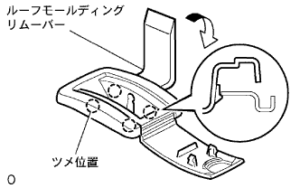
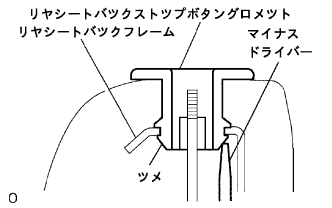

Rear seat ASSY (4WD) decomposition |
| 1. Remove the rear seat cushion cover & pad |
Remove the hogling and remove the rear seat cushion cover and pad.
| 2. Remove the rear seat cushion and remove |
Remove the rear seat cushion and cross.
| 3. Remove the rear seat headrest ASSY |
Remove two rear seat headrest ASSY.
| 4. Remove the rear seat headrest ASSY CTR |
Remove the rear seat headrest ASSY CTR.
| 5. Remove the rear seat back stop release button |
 |
Turn it in the direction of the figure and remove two rear seat back stop release buttons.
| 6. Remove the rear seat back cover |
|  |
Use a roof molding rimover to remove the claws and remove two rear seat backcas.
| 7. Remove the rear seat headrest support |
 |
Use the clip resover to remove the 5 clips.
Fit the rear seat back cover and remove the hogling.
 |
Remove the claws and remove six rear seat headrest support ASSY.
| 8. Remove the rear seat back stop button gromet |
|  |
Use a flathead screwdriver to remove the claws and remove the two rear seat combat top butterbot romets.
| 9. Rena seat backpad SUB-ASSY (cover Tsuki) |
Remove the rear seat back cover and pad.
| 10. |
Remove the rear seat back and crose.
| 11. Remove the rear seat back lock ASSY RH |
 |
Remove the two bolts and remove the rear seat back rock ASSY RH.
| 12. Remove the rear seat back locking asset LH |
Remove the two bolts and remove the rear seat back rock ASSY LH.